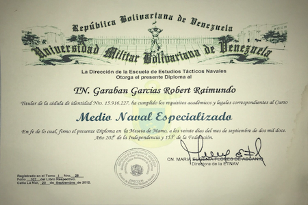

Sou profissional com 20 anos de experiência na área de engenharia, atualmente moro no Rio de janeiro Brasil, estou em processo de reengenharia, evolução e adaptação, com grande expectativa e saí da minha zona de conforto e estou entrando no O escopo fornece tecnologia e desenvolvimento de sistemas, uma ferramenta vital em um mundo global com tecnologias como 5G, indústria 4.0 e Sustentabilidade.
Desenvolvedor Full Star Junior na TOTI no ano 2020.

Tecnólogo em Gerenciamento de Negócios Internacionais da Universidade José Antônio Paez, concluído em agosto 2018.
Mestrado em Manutenção e Operação de Frotas Marítimas, Universidade da Universidade Militar Bolivariana de Venezuela, concluído em julho 2017.
Mestrado em Administrações das Unidade Navais e responsável pela sua operação e manutenção, Universidade da Universidade Militar Bolivariana de Venezuela, concluído em julho 2015.
Curso de Aperfeiçoamento de Submarinos para Oficiais, Centro de Instrução e Adestramento Almirante Áttila Monteiro Aché (CIAMA), Republica Federativa do Brasil, concluído em julho 2013.
Curso de Aperfeiçoamento de Oficiais de Ingeneria Apliacada para Submarinos, Academia Naval Granma, Republica de Cuba, Republica de Cuba, concluído em julho 2010.
Bacharel em Ciencias Navais menção Ingeneria Naval, Escola Naval da Venezuela, concluído em julho 2004.
Cargo: Instrutor OMI.
Princípios de responsabilidade:
• Atuar como Instrutor nas Aulas sobre a Convenção Internacional sobre Normas de Formação, de Certificação e de
Sevicio de Quadro para Marítimos (Convenio STCW 78).
• Disciplina de Segurança Pessoal e Responsabilidade Social (SPR/P) e (SPR/N).
• Prevenção e Combate a Incêndio (PCI/P) e (PCI/N).
• Técnicas de Sobrevivência Pessoal e Procedimentos de Emergência (TSP/P) TSP/N).
• Conscientização de Proteção (CDP/P) e (CDP/N).
• Curso de Embarcação Rápida de Resgate (CERR).
• Curso de Embarcação de Sobrevivência e Salvamento (CESS).
• Curso Básico de Segurança de Navios (SBSN – STCW).
• Curso de Familiarização de Proteção de Navio (CFPN).
Cargo: diretor de finanças e comércio exterior da empresa 7 minas do Brasil.
Princípios de responsabilidade:
• Responsável pelo controle da execução física e financeira dos projetos foi implementado na República
Federal do Brasil e nos Estados Unidos.
• Verificação dos instrumentos financeiros que os operadores económicos prestam para realizar as operações.
• Verificar a veracidade das informações fornecidas pelos comerciantes em suas ofertas.
• Consulte os produtos portuários das regiões onde são oferecidos materiais e produtos.
• Assegure as programações corretas da entrega e da distribuição dos produtos.
• Manter as diferentes listas de vendedores e compradores dos inventários da empresa atualizados.
• Confira os contratos da empresa e as diferentes condições de entrega na câmara de comércio internacional.
• Participar das atividades das diferentes câmaras de comércio em que a empresa está registrada.
• Controlar e executar reuniões de negócios para planejar a empresa.
• Gerenciar a equipe da diretoria e auxiliar no bom funcionamento da empresa.
Cargo: Chefe do Projeto para Reparo e Manutenção do Submarino AB. “CARIBE” (S-32).
Principais responsabilidades:
• Responsável pela execução administrativa dos recursos econômicos assinados ao contrato, garantindo o
fluxo de pagamento, utilizando a integração das ferramentas computacionais e a dívida interpretação dos
sistemas e programação estratégica.
• Chefe de avaliação e controle do andamento do projeto, informados nos relatórios de controle de gestão
ou indicadores de os resultados obtidos para as horas.
• Responsável pela administração de bens públicos cedidos à unidade e seu emprego, também os controles das
garantias post ventas.
• Responsável pela gestão de grandes grupos de trabalho com especialistas em diferentes áreas e de alta
performance, todos com comprovada capacidade técnica e científica.
")
Cargo: Chefe da Divisão de Engenharia Submarina da AB. “CARIBE” (S-32).
Principais responsabilidades:
• Chefe de treinamento do pessoal da Divisão e avaliação do controle do pessoal designado para a Divisão.
• Responsável por melhorar e implementar novos processos para a preparação e armazenamento de peças de
reposição e suprimentos.
• Responsável pela implementação dos diferentes regulamentos e regulamentos relativos ao controle e proteção
portuária.
• Responsável pelo gerenciamento, operação e planificação da manutenção dos equipamentos elétricos, geração
elétrica, reconstituição da atmosfera, equipamentos de armazenamento de ar de alta pressão, sistemas de
propulsão elétrica, motores diesel e sistema hidráulico de alta pressão.
")
Cargo: Chefe da Área de Eletricidade Submarina AB. "SÁBALO" (S-31).
Principais responsabilidades:
• Responsável pelo Treinamento e treinamento do pessoal da área.
• Responsável por melhorar e implementar novos processos para a preparação e armazenamento de peças de
reposição e suprimentos.
• Responsável pela gestão de grandes grupos de trabalho, com a intervenção de técnicos especializados e
trabalhadores na operação de equipamentos elétricos e geração de energia.
")
Cargo: Chefe da Divisão Acadêmica da Escola Submarina da Marinha Bolivariana.
Principais responsabilidades:
• Chefe da Divisão Acadêmica da Escola Submarina da Marinha Bolivariana, Esquadro do Submarina, Comando
Naval de Educação.
• Responsável pelo treinamento de pessoal da Forças de Submarinos da Venezuela e capacitação dos novos
alunos e pessoal.

Cargo: Chefe da Divisão de Operações e Logística do Navio Patrulha de Combate AB. “CONSTITUIÇÃO”.
Principais responsabilidades:
• Responsável pelo Capitação e treinamento de pessoal do Navio e administração dos recursos atribuídos à
unidade pelo estado venezuelano.
• Responsável de melhorar e implementar novos processos para a preparação e armazenamento de alimentos.
• Responsável pelo planejamento de todas as atividades operacionais da unidade, bem como pela aquisição dos
materiais necessários.
• Responsável pela implementação dos diferentes regulamentos relativos ao controle e proteção portuária e de
acordo com as normas internacionais aplicados mundialmente pela Organização Marítima Internacional (IMO).
Cursos da Convenção Internacional sobre Normas de Formação, de Certificação e de Sevicio de Quadro.